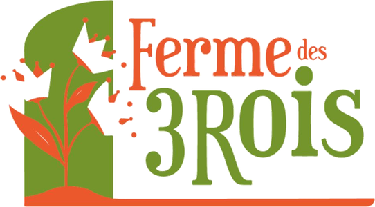
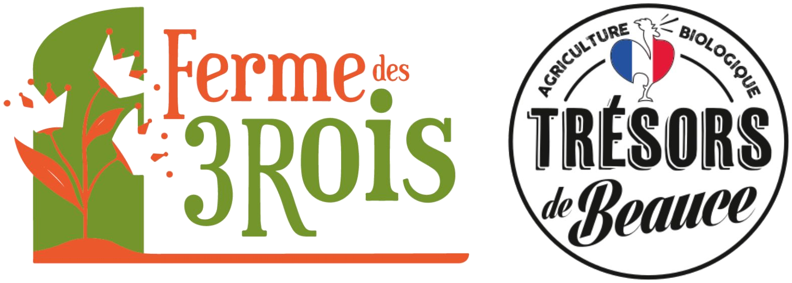
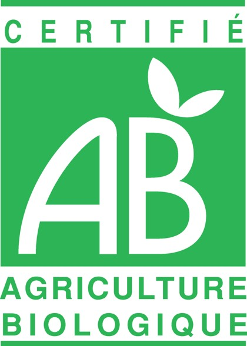
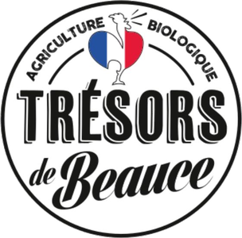

Professionnels
Ferme des 3 Rois
Vente directe au vrac et en sacs kraft cousus de 1, 5 ou 10 kg, pour restaurateurs, collectivités et magasins.

Ferme familiale bio en Beauce, depuis 6 générations


Vente directe au vrac et en sacs kraft cousus de 1, 5 ou 10 kg, pour restaurateurs, collectivités et magasins.

La gamme en sachets compostables de 400 g, à retrouver en épiceries fines, sur les marchés et bientôt en ligne.